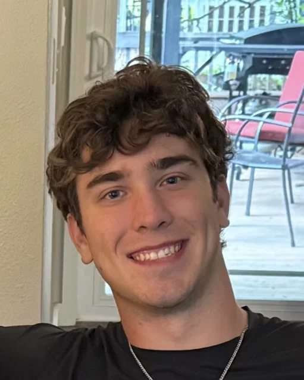

A simulated Fizeau interferogram. Move your cursor to the center of the disc (or tap and drag on it) to null the tilt, the way you align a part on the interferometer.
About

I'm from Sammamish, WA, and I'm working toward a B.S. in Optical Engineering at the University of Rochester, expected May 2028. At Optimax I assemble and align precision optical systems in cleanrooms, verify them with transmitted wavefront interferometry and polarization purity measurements, and take encircled energy measurements. I also design tooling in SolidWorks, including a mesh that laminarizes air flow to improve interferometer measurements.
Outside of work I build open-source tools for optical design and glass selection. I also work with Rochester's varsity baseball team on Trackman and video analysis, after pitching for the team for two seasons. In my free time I enjoy lifting and reading.
Projects
Kestrova
Optical design and analysis software
A free, local optical design program in the spirit of Zemax and CODE V. You enter a lens prescription surface by surface; it traces real rays, computes Seidel aberrations, wavefront error and MTF, and runs tolerancing with compensators and Monte Carlo yield estimates.
An exact 3D ray trace of a 100 mm cemented achromat (N-BK7 and SF5), running in your browser. Slide off-axis and watch the spot grow at the fixed focal plane.
GlassMatch
Optical glass selection database
About 2,900 optical materials from 18 sources in one searchable database. Search by index, Abbe number, transmission band and thermal expansion, find equivalent glasses across SCHOTT, OHARA, HOYA, CDGM and other makers, and trace every value back to its source.
Matching glasses against a visible-band requirement.
Telecentric stereo microscope
Geometrical Optics course, University of Rochester, fall 2025
A first-order design of a telecentric stereo microscope for art conservation. I balanced magnification, working distance, resolution and size, then turned the first-order layout into a buildable configuration using catalog optics.
Experience
Optical Systems InternOptimax Systems, Ontario, NYAug 2026 – present
Analytics Assistant, Varsity BaseballUniversity of RochesterOct 2026 – present
Independent Study ResearcherUniversity of Rochester, Prof. Gerald GammSep 2025 – present
Systems Test Engineer InternStealth AI startup, Bellevue, WAJun – Jul 2026
Powder Coat ProcessorTechnical Glass Products, Snoqualmie, WAMay – Aug 2025
Pitcher, Varsity BaseballUniversity of RochesterAug 2024 – Oct 2026